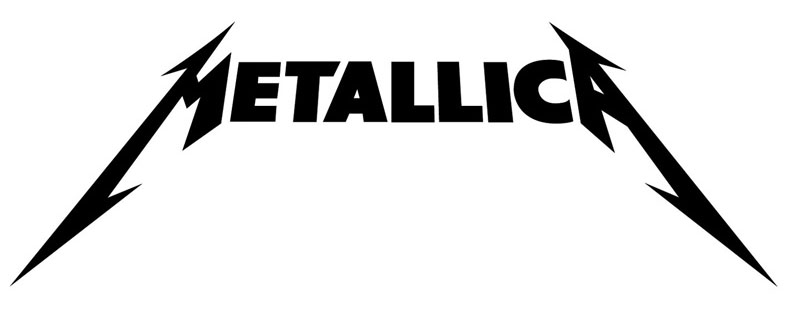

Hear us out: there are no truly bad Metallica albums. From Kill 'Em All, their first crucial blow in the quest for world domination, to the eyeliner-fuelled era of the mid-90s and beyond, each of Metallica's 10 studio albums has its own place in their legacy. Even if the music contained within doesn't exactly float your boat, every single one of those albums has played its part in making Metallica the band they are today. They're all important, because they all mean something. Metallica's ability to adapt their sound and experiment with where exactly they fit in with regards to rock's broader landscape is what has kept us talking about them nearly 40 years since it all began in a dingy garage in LA. Sometimes it's worked, sometimes it's produced a clanger of unconscionable proportions. But you can't fault them for putting themselves out there and fearlessly taking a few risks – dancing on the cusp of intra-band implosion along the way. Of course, in a back catalogue as diverse as Metallica's, there will be vehement disagreement about which of those eras produced the best material. For every ardent Master Of Puppets fan, you'll find someone willing to argue that Lulu really wasn't as bad as everyone makes out, actually. You have fans who can't stand the noisy early stuff, and those who refuse to listen to anything post '88.
They're all legitimate opinions, even if some of them are more controversial than others. So when it came to ranking each Metallica album in order of greatness, we decided to do the democratic thing and turn the weighty decision over to a public vote. From a list of their 10 studio albums, plus a live album, a covers compilation and that collaboration, thousands of people joined us to nail down the definitive order of every Metallica album from worst to best. Here's what they decided.